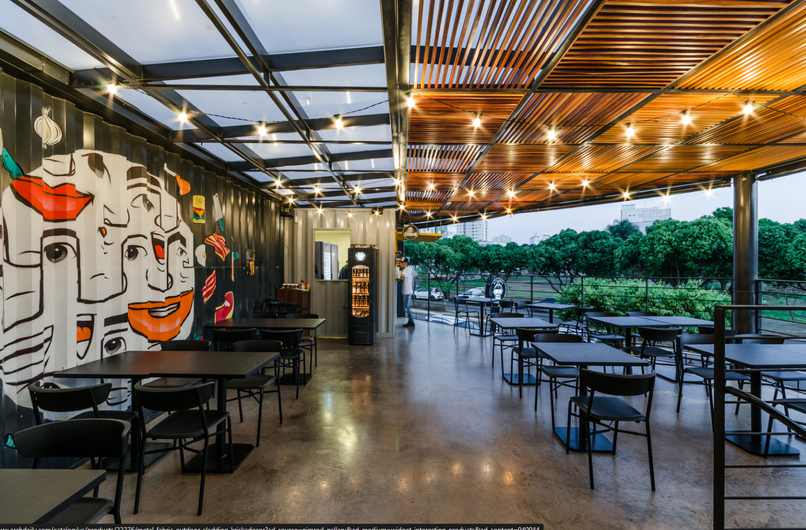
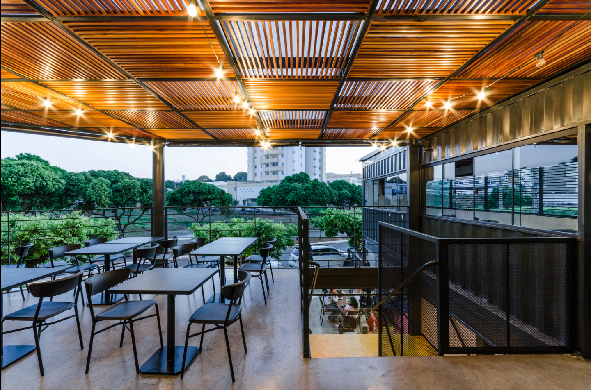
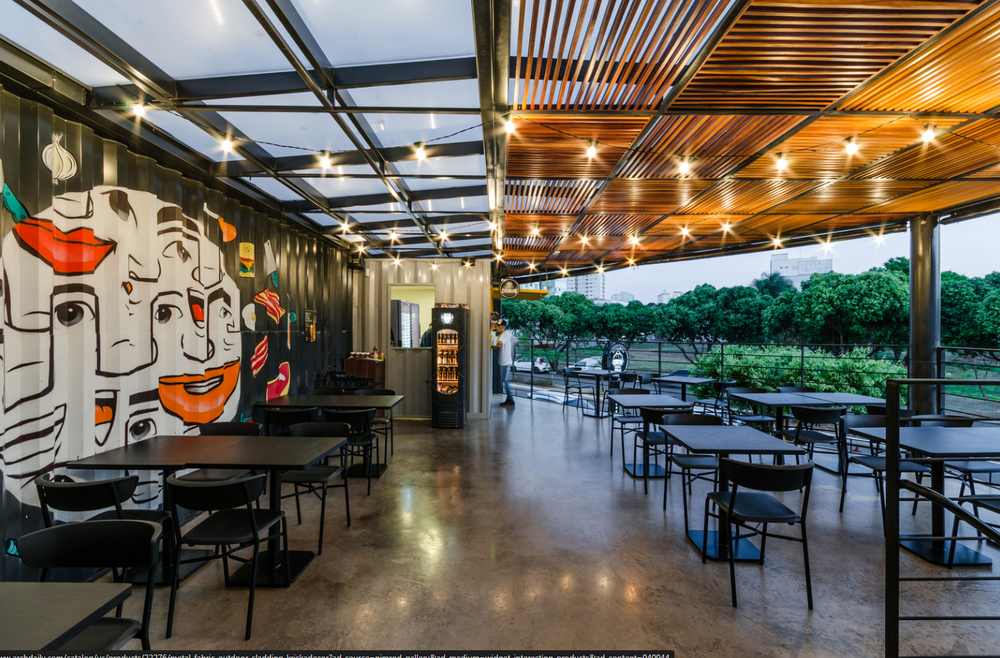
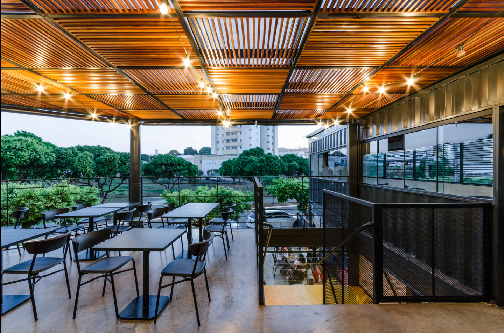

Acreditamos que o nosso bem mais valioso é a nossa Gente.
Por isso, apostamos na carreira de nossos colaboradores, com o objetivo de impulsionar a visão de dono daqueles que, junto com a gente, acreditam em um Sonho Grande: ser a mais prazerosa experiência de alimentação. Para sustentar esse sonho, focamos em quatro pilares: sermos a marca de fast food preferida, mais rentável, com pessoas talentosas e com forte presença nacional.

Missão : Ser a mais prazerosa experiência de alimentação.Em um mundo onde as tendências gastronômicas vêm e vão, há algo sobre uma hamburgueria clássica que nunca sai de moda. Dentro das paredes acolhedoras da Dinners Burguer, a tradição encontra inovação em cada suculento hambúrguer servido.
Essencia: Desde o momento em que você atravessa a porta, é transportado para um espaço onde o aroma tentador de carne grelhada e pão tostado se mistura com a energia vibrante de um local que celebra a cultura do hambúrguer. As paredes adornadas com pôsteres retrô e luzes de néon criam uma atmosfera nostálgica, convidando você a mergulhar em uma experiência que é tão gratificante quanto familiar.
Ingredientes:Os ingredientes frescos e de alta qualidade são a pedra angular de cada criação culinária aqui. Carnes suculentas, queijos derretidos, vegetais crocantes e molhos artesanais se unem para criar uma explosão de sabores em cada mordida.
Missão: a ética é o ingrediente principal em tudo o que fazemos. Desde a seleção cuidadosa dos nossos ingredientes até o atendimento caloroso aos nossos clientes, buscamos sempre agir com integridade e respeito.
Visão: Nosso compromisso ético começa na origem dos nossos produtos. Trabalhamos em parceria com fornecedores que compartilham dos nossos valores de sustentabilidade e responsabilidade social, garantindo que cada ingrediente utilizado em nossos hambúrgueres seja produzido de forma ética e sustentável.
Transparencia: Além disso, valorizamos a transparência em todas as nossas relações, desde a comunicação com nossos clientes até as nossas práticas comerciais. Nos esforçamos para fornecer informações claras e precisas sobre nossos produtos, garantindo que nossos clientes possam fazer escolhas informadas.
Fidelidade Dinner's Aqui estão alguns dos benefícios que você pode desfrutar ao se tornar um cliente fiel:
Cartão Dinner's: Como forma de agradecer pela sua lealdade, oferecemos um programa de fidelidade exclusivo para nossos clientes frequentes. Com benefícios especiais, descontos e ofertas personalizadas, você será recompensado por cada visita à Diiner's Burguer.
Ambiente Acolhedor: Criamos um ambiente acolhedor e convidativo para que você se sinta em casa sempre que nos visitar. Nossa hamburgueria é o local perfeito para desfrutar de uma refeição rápida com os amigos ou um jantar especial em família, proporcionando momentos memoráveis a cada visita.
01
Este prestigioso prêmio reconhece a excelência da Diiner's Burgers como a principal hamburgueria de Franca, interior de São Paulo.
02
A Diiner's Burgers recebeu o Prêmio "Sabor Local" como reconhecimento por seu papel em promover a culinária regional e o desenvolvimento da comunidade.
03
O prêmio "Criatividade em Combinações" foi concedido à Diiner's Burgers em reconhecimento à sua originalidade e excelência na arte de montar hambúrgueres.